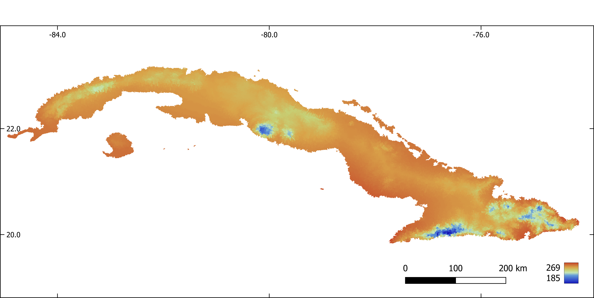

2.7. Yusdiel Torres-Cambas: Distribution of freshwater biodiversity across Cuba
2.7.1. Introduction
Freshwater ecosystems are amongst the most biodiverse and the most important providers of ecosystem services to humans globally. Simultaneously, these ecosystems are also amongst the most threatened in the world. Threats include habitat loss and fragmentation, overharvesting, flow alteration, contamination and introduction of invasive species; all of which could be exacerbated by the influence of climate change in the future. Species distribution is a basic information required to develop conservation strategies for freshwater ecosystems. Unfortunately, we lack this information for many of the tropical freshwater species. Species distribution models are a useful tool to fill this knowledge gap. In the present project, the potential distribution of species of freshwater insects, crustaceans, mollusk, amphibians and fishes was modeled. The first part of the project is dedicated to prepare the model inputs. These include download, crop and reproject the layers of predictor variables, aggregate this variables by sub-basins and generate pseudoabsences for the models. The second part includes the modelling procedure.
2.7.2. 1. Predictor variables
All the layers were cropped to the extent of Cuba and reprojected (Cuba Norte projection, EPSG: 3795).
2.7.2.1. 1.1. Download and mosaic tiles of a digital elevation model
#Download and mosaic DEM tiles
#!/bin/bash
INPUT=/media/sf_Nextcloud/matera/raster_layers/wgs84
OUTPUT=/media/sf_Nextcloud/matera/raster_layers/wgs84
#INPUTV=/media/sf_Nextcloud/matera/vector_layers
#Download and unpack DEM tiles for Cuba
wget --user=hydrography --password=rivernetwork -P $OUTPUT http://hydro.iis.u-tokyo.ac.jp/~yamadai/MERIT_Hydro/distribute/v1.0/elv_n00w090.tar
tar -xvf $INPUT/elv_n00w090.tar -C $OUTPUT
#Mosaic tiles
gdalbuildvrt -overwrite $OUTPUT/merit_hydro_cuba_wgs8.vrt $INPUT/elv_n00w090/n15w075_elv.tif $INPUT/elv_n00w090/n20w075_elv.tif $INPUT/elv_n00w090/n15w080_elv.tif $INPUT/elv_n00w090/n20w085_elv.tif $INPUT/elv_n00w090/n20w080_elv.tif
gdal_translate -co COMPRESS=DEFLATE -co ZLEVEL=9 $OUTPUT/merit_hydro_cuba_wgs8.vrt $OUTPUT/dem_wgs8.tif
2.7.2.2. 1.2. Download bioclimatic variables
### Download a list of raster layers from CHELSA website
#that represent bioclimatic variables for present climate
#!/bin/bash
#links_bio.txt: URLs of files to be downloaded
INPUT=/media/sf_Nextcloud/matera/scripts
OUTPUT=/media/sf_Nextcloud/matera/raster_layers/wgs84
wget -i $INPUT/links_bio.txt -P $OUTPUT
2.7.2.3. 1.3. Download and mosaic tiles of tree cover
#Download and mosaic Global 2010 Tree Cover (30 m)
#!/bin/bash
INPUT=/media/sf_Nextcloud/matera/raster_layers/wgs84
OUTPUT=/media/sf_Nextcloud/matera/raster_layers/wgs84
#INPUTV=/media/sf_Nextcloud/matera/vector_layers
#Download tree cover tiles for Cuba
wget -P $OUTPUT https://glad.umd.edu/Potapov/TCC_2010/treecover2010_20N_080W.tif
wget -P $OUTPUT https://glad.umd.edu/Potapov/TCC_2010/treecover2010_30N_080W.tif
wget -P $OUTPUT https://glad.umd.edu/Potapov/TCC_2010/treecover2010_30N_090W.tif
#Mosaic tiles
gdalbuildvrt -overwrite $OUTPUT/tree_wgs84.vrt $INPUT/treecover2010_20N_080W.tif $INPUT/treecover2010_30N_080W.tif $INPUT/treecover2010_30N_090W.tif
gdal_translate -co COMPRESS=DEFLATE -co ZLEVEL=9 $INPUT/tree_wgs84.vrt $OUTPUT/tree_wgs84.tif
2.7.2.4. 1.4. Calculate slope
#Calculate slope
#!/bin/bash
INPUT=/media/sf_Nextcloud/matera/raster_layers/wgs84
OUTPUT=/media/sf_Nextcloud/matera/raster_layers/wgs84
#Slope
gdaldem slope -s 111120 -alg ZevenbergenThorne -co COMPRESS=LZW -co ZLEVEL=9 $INPUT/dem_wgs8.tif $OUTPUT/slope_wgs84.tif
2.7.2.5. 1.5. Crop and reproject
#Crop and reproject (Cuba Norte EPSG:3795)
#!/bin/bash
VECTORPATH=/media/sf_Nextcloud/matera/vector_layers
INPUTPATH=/media/sf_Nextcloud/matera/raster_layers/wgs84
OUTPUTPATH=/media/sf_Nextcloud/matera/raster_layers/cubanorte
#Download a vector file of Cuba. This vector file is used to crop all raster
wget -P $VECTORPATH https://data.humdata.org/dataset/32b4ba2e-2ee5-4b2b-a7e4-9e4d323ffe73/resource/42e19431-86a8-451c-a903-d60ec5ec16ad/download/cub_adma_2019_shp.zip
unzip -o $VECTORPATH/cub_adma_2019_shp.zip -d $VECTORPATH
#Crop and reproject DEM
#Crop
gdalwarp -cutline $VECTORPATH/cub_admbnda_adm0_2019.shp -cl cub_admbnda_adm0_2019 -crop_to_cutline $INPUTPATH/dem_wgs8.tif -dstnodata -9999 $INPUTPATH/dem_wgs8_crop.tif
# Reproject
gdalwarp -t_srs EPSG:3795 -r bilinear $INPUTPATH/dem_wgs8_crop.tif $OUTPUTPATH/dem.tif
#Crop and reproject bioclimatic layers
for file in $INPUT/CHELSA*.tif; do
filename=$(basename $file .tif | cut -f 3 -d '_')
echo $file
echo $filename
gdalwarp -cutline $VECTORPATH/cub_admbnda_adm0_2019.shp -cl cub_admbnda_adm0_2019 -crop_to_cutline $file -co COMPRESS=LZW -co ZLEVEL=9 -dstnodata -9999 $INPUT/bio$filename.tif -overwrite
gdalwarp -t_srs EPSG:3795 -r bilinear $INPUT/bio$filename.tif -co COMPRESS=LZW -co ZLEVEL=9 -dstnodata -9999 $OUTPUT/bio$filename.tif -overwrite
done
#Crop and reproject percent tree cover
#Crop
gdalwarp -cutline $VECTORPATH/cub_admbnda_adm0_2019.shp -cl cub_admbnda_adm0_2019 -crop_to_cutline $INPUTPATH/tree_wgs84.tif -dstnodata $INPUTPATH/tree_wgs84_crop.tif
# Reproject
gdalwarp -t_srs EPSG:3795 -r bilinear $INPUTPATH/tree_wgs84_crop.tif $OUTPUTPATH/tree.tif
#Crop and reproject slope
#Crop
gdalwarp -cutline $VECTORPATH/cub_admbnda_adm0_2019.shp -cl cub_admbnda_adm0_2019 -crop_to_cutline $INPUTPATH/slope_wgs84.tif -dstnodata -9999 $INPUTPATH/slope_wgs84_crop.tif
# Reproject
gdalwarp -t_srs EPSG:3795 -r bilinear $INPUTPATH/slope_wgs84_crop.tif $OUTPUTPATH/slope.tif
2.7.3. 2. Stream network and sub-basins
The digital elevation model was used to extract a stream network and sub-basins associated with each stream reach in GRASS-GIS. All predictors were aggregated (mean) by sub-basin.
2.7.3.1. 2.1. Make a GRASS GIS database
#Make a GRASS GIS database
#Path to the database
export GRASS=/media/sf_Nextcloud/matera/grassdatabase
echo $GRASS
mkdir $GRASS
#Path to a DEM. The DEM is used to set the resolution and CRS of the GRASS-GIS
#location
export DEMPATH=/media/sf_Nextcloud/matera/raster_layers/cubanorte/dem_3795.tif
echo $DEMPATH
### Create the GRASS GIS database and enter GRASS:
grass78 -text -c $DEMPATH $GRASS/cubanorte
2.7.3.2. 2.2. Extract flow direction, flow accumulation, stream network, basins and sub-basins
#Extract flow direction, flow accumulation, stream network, basins and sub-
#basins
#Path to the database
export GRASS=/media/sf_Nextcloud/matera/grassdatabase
echo $GRASS
mkdir $GRASS
#Path to a DEM
export INPUT=/media/sf_Nextcloud/matera/raster_layers/cubanorte/dem_3795.tif
echo $INPUT
#Output path
export OUTPUT=/media/sf_Nextcloud/matera/raster_layers/cubanorte
export OUTPUTV=/media/sf_Nextcloud/matera/vector_layers/cubanorte
# Open a GRASS GIS session
grass78 -text $GRASS/cubanorte/PERMANENT
### Import an elevation model into GRASS:
r.in.gdal $INPUT output=elevation
#Visualize DEM
d.mon wx0
d.rast elevation
# flow direction, flow accumulation, stream
r.watershed -b -a elevation=elevation drainage=dirs stream=stream accumulation=accums threshold=500 convergence=10 --o
# basins
g.extension r.stream.basins
r.stream.basins direction=dirs stream_rast=stream basins=basins_last -l --o
# sub-basins
r.stream.basins direction=dirs stream_rast=stream basins=sub_basins --o
r.grow input=sub_basins output=sub_basins_g --overwrite
# stream network with stream order
g.extension r.stream.order
r.stream.order stream_rast=stream elevation=elevation direction=dirs accumulation=accums strahler=stream_strahler stream_vect=streams_v --o
# Save results
r.out.gdal input=basins_last output=$OUTPUT/basins.tif type=Int32 nodata=-9999 --o -c -m createopt="COMPRESS=LZW,ZLEVEL=9"
r.out.gdal input=sub_basins_g output=$OUTPUT/sub_basins.tif type=Int32 nodata=-9999 --o -c -m -f createopt="COMPRESS=LZW,ZLEVEL=9"
v.out.ogr input=streams_v output=$OUTPUTV/streams_v.gpkg format=GPKG type=line --overwrite
r.out.gdal input=accums output=$OUTPUT/accums.tif type=Int32 nodata=-9999 --o -c -m -f createopt="COMPRESS=LZW,ZLEVEL=9"
r.out.gdal input=dirs output=$OUTPUT/dirs.tif type=Int32 nodata=-9999 --o -c -m -f createopt="COMPRESS=LZW,ZLEVEL=9
Figure 1. Stream network extracted with GRASS-GIS
Figure 2. Sub-basins extracted with GRASS-GIS
2.7.3.3. 2.3. Aggregate predictors by sub-basin
#Aggregate predictors by sub-basin
#Path to the database
export GRASS=/media/sf_Nextcloud/matera/grassdatabase
echo $GRASS
#Input path
export INPUT=/media/sf_Nextcloud/matera/raster_layers/cubanorte
#Output path
export OUTPUT=/media/sf_Nextcloud/matera/raster_layers/cubanorte_aggregate
# Open a GRASS GIS session
grass78 -text $GRASS/cubanorte/PERMANENT
#Import sub-basins
r.in.gdal /media/sf_Nextcloud/matera/raster_layers/cubanorte/sub_basins.tif output=subb --overwrite
for file in $INPUT/*.tif; do
filename=$(basename $file .tif)
echo $file
echo $filename
r.in.gdal $file output=predictor --overwrite
r.grow input=predictor radius=5 output=predictor --overwrite
r.stats.zonal method=average cover=predictor base=subb output=predictor_aggr --overwrite
r.out.gdal input=predictor_aggr output=$OUTPUT/$filename.tif type=Float32 nodata=-9999 --o -c -m -f createopt="COMPRESS=LZW,ZLEVEL=9"
done
 Figure 3. Percent of tree cover aggregated by sub-basin.
Figure 3. Percent of tree cover aggregated by sub-basin.
 Figure 4. Slope aggregated by sub-basin.
Figure 4. Slope aggregated by sub-basin.
 Figure 5. Flow accumulation aggregated by sub-basin.
Figure 5. Flow accumulation aggregated by sub-basin.
 Figure 6. Annual mean temperature (x 10) aggregated by sub-basin.
Figure 7. Mean diurnal range (x 10) aggregated by sub-basin.
 Figure 8. Temperature seasonality aggregated by sub-basin.
Figure 8. Temperature seasonality aggregated by sub-basin.
 Figure 9. Annual precipitation (mm).
Figure 9. Annual precipitation (mm).
 Figure 10. Precipitation of the driest month (mm).
Figure 10. Precipitation of the driest month (mm).
## 3. Biodiversity data
Occurrence records were obtained from the scientific literature, unpublished thesis, Cuban scientific collections and online databases (GBIF, https://www.gbif.org, iNaturalist, https://www.inaturalist.org/).
Pseudo-absences were selected at random from potential unsuitable sub-basins for the presence of each species, previously identified through a one-class support vector machine analysis (i.e. two-step pseudo-absence selection method, Senay et al., 2013). The number of selected pseudo-absences was set to keep a constant prevalence (i.e. proportion presences / pseudoabsences) of 0.1 through all species (Barbet-Massin et al., 2012).
### 3.1. Creates a map with prediction points. One point per stream reach. Extract predictor values at each point
```{r eval=FALSE}
R
#Creates a map with prediction points. One point per stream reach. Extract predictor values at each point
library(dplyr)
library(sf)
library(raster)
library(maptools)
# Import presences
pres <- st_read("./vector_layers/cubanorte/oc.gpkg")
# Import streams
streams <- st_read("./vector_layers/cubanorte/streams_v.gpkg") %>%
filter(!(length==0))
# Transform stream to an sp object
streams <- as_Spatial(streams)
# Get coordinates of the middle point of each stream segment
center_points <- getSpatialLinesMidPoints(streams)%>%
as.data.frame(center_points@coords) %>%
st_as_sf(coords = c("coords.x1","coords.x2"))%>%
st_set_crs(3795)
center_points <- as_Spatial(center_points)
# Snap points to the nearest line
center_points <- snapPointsToLines(center_points, streams)
# Get ID of each stream segment
stream_id <- streams$stream
# Creates an sf object with stream IDs and middle point of each stream
prediction_sites <- as(center_points, "sf")%>%
dplyr::select(geometry)
prediction_sites$stream_id <- stream_id
# Extract predictor values at prediction points
list_pred <- list.files("./raster_layers/cubanorte_aggregate", full.names = T)
predict_stack <- raster::stack(list_pred)
predict_val <- extract(predict_stack, prediction_sites)
# Standardize variables
predict_val <- predict_val %>%
scale(center = T, scale = T)
prediction_sites <- cbind(prediction_sites, predict_val) %>%
st_set_crs(3795)
# Save results
st_write(prediction_sites, "./sdm/input/prediction_sites.gpkg",
driver = "GPKG", append = F)
2.7.3.4. 3.2. Make maps with presence and pseudoabsences
#Creates a map with presence and pseudoabsences
R
library(dplyr)
library(sf)
library(raster)
library(e1071)
# Keep only one observation point per sub-basin and extract predictor values at
# each observation point
pres <- st_read("./vector_layers/cubanorte/oc.gpkg")
sub_bas <- raster("./raster_layers/cubanorte/sub_basins.tif")
pres_ids <- extract(sub_bas, pres)%>%
unique()
predict_points <- st_read("./sdm/input/prediction_sites.gpkg")
pres_pred <- predict_points %>%
filter(stream_id %in% pres_ids)
# Inputs of the OCSVM model
occur_vars <- pres_pred %>%
dplyr::select(-stream_id) %>%
st_drop_geometry()
bkgr_vars <- predict_points %>%
dplyr::select(-stream_id) %>%
st_drop_geometry()
# Model fitting
svm_model <- svm(occur_vars, y=NULL, type='one-classification', nu=0.5)
# Make predictions with OCSVM
env_prof_r <- predict(svm_model, bkgr_vars)
# Transform predictions from TRUE/FALSE to 1/0
env_prof_r <- ifelse(env_prof_r=="FALSE",0,1)
# Add sub-basins ids
env_prof_r <- data.frame(predict_points$stream_id, "pres_abs" = env_prof_r)
# Extract sub-basins IDs at sub-basins where the species is not recorded and
# the environmental profiling predicted an absence
abs_ids <- predict_points %>%
filter(!(stream_id %in% env_prof_r$stream_id) &
!(stream_id %in% pres_pred$stream_id))
# Generates a random sample of sub-basin IDs where the species is
# potentially absent (no records or absence predicted by OCSVM).
# The number of random points is 10 times the number of occurrences
pseudo_streams_ids <- sample(x = abs_ids$stream_id, size = 10*nrow(pres_pred))
# Make an sf object with random points from previous step
pseudoabs_map <- predict_points %>%
filter(stream_id %in% pseudo_streams_ids)
# Add a column with absences to the sf object from previous step
pseudoabs_map$pres_abs <- 0
# Add a column with presences to the sf object with occurrence points
pres_pred$pres_abs <- 1
# Bind presences and absences in an sf object
obser_sites <- rbind(pres_pred, pseudoabs_map) %>%
st_set_crs(3795)
# Save results
st_write(obser_sites, "./sdm/input/obs.gpkg", append = F)
2.7.3.5. 3.3. Make inputs required to create an SSN object, a kind of R object necessary to fit a Spatial Linear Models for Stream Networks (Hoef et al. 2014, Peterson et al. 2020).
References:
Hoef, J.M. Ver, Peterson, E.E., Clifford, D., Shah, R., 2014. SSN: An R package for spatial statistical modeling on stream networks. J. Stat. Softw. 56, 1–45.
Peterson, E., Scha, R.B., Id, M.K., Szo, E., 2020. Preparing GIS data for analysis of stream monitoring data: The R package openSTARS 1–10. https://doi.org/10.1371/journal.pone.0239237
The first part of the script initiate a GRASS-GIS session and import rasters with flow direction and flow accumulation and vector maps with a stream network and prediction sites into GRASS-GIS.
#!/bin/bash
#Input and output path
export INPUTDIR=/media/sf_Nextcloud/matera/
export OUTPUTDIR=/media/sf_Nextcloud/matera/sdm/input
echo $INPUTDIR
echo $OUTPUTDIR
# Make a GRASS location with a projected CRS for Cuba (EPSG: 3795) and load GRASS GIS.
grass78 -text -c $INPUTDIR/raster_layers/cubanorte/dem_3795.tif $INPUTDIR/grass_openstars
#Open an existing GRASS location
#grass78 -text $INPUTDIR/grass_openstars/PERMANENT
# Check current location projection
g.proj -wf
# Import maps of flow direction, flow accumulation, stream network,
# sampling sites and prediction sites into GRASS
#Map's name for flow direction, flow accumulation, stream network and
#sampling sites must be "dirs", "accums", "streams_v" and "sites_o" respectivelly
r.in.gdal $INPUTDIR/raster_layers/cubanorte/dirs.tif output=dirs --overwrite
r.in.gdal $INPUTDIR/raster_layers/cubanorte/accums.tif output=accums --overwrite
v.in.ogr $INPUTDIR/vector_layers/cubanorte/streams_v.gpkg output=streams_v --overwrite
v.in.ogr $INPUTDIR/sdm/input/prediction_sites.gpkg output=pred_sites_o --overwrite
#Rename columns in the attribute table of streams_v. This is required because
# openSTARS exports the results as Esri shapefiles, that requires column names length
# of 10 charactres or less
v.db.renamecolumn map=streams_v column=next_stream,next_str
v.db.renamecolumn map=streams_v column=scheidegger,scheid
v.db.renamecolumn map=streams_v column=source_elev,s_elev
v.db.renamecolumn map=streams_v column=outlet_elev,o_elev
#Check the attribute table
db.columns table=streams_v
The second part of the script calls R from within the GRASS-GIS session of the previous step, (1) check and correct the stream network and (2) prepare edges, (3) observation sites and (4) prediction sites.
(1)check and correct the stream network: Stream network may have stream confluences of more than three segments, i.e. where more than two line segments flow into a node. These parts must be corrected before further processing.
(2)prepare edges: Information (e.g. reach contributing area, upstream catchment areas, attributes related with the topology of the stream network) needed for the SSN object are derived for the streams and stored in a new vector map edges.
(3) prepare observation sites and (4) prediction sites: snap points to the stream network, and add some attributes (e.g. distance to the outlet, reach identifier, network identifier)
R
library(openSTARS)
library(sp)
library(rgdal)
library(dplyr)
library(rgrass7)
use_sp()
# Correct the network where more than two line segments flow into a node
correct_compl_confluences()
#Prepare edges. Information needed for the SSN object are derived for the
#streams and stored in a new vector map "edges" based on streams_v
calc_edges()
#Read files with observation points
path_obs_files <- "/media/sf_Nextcloud/matera/sdm/input/obs_sites"
obs_files <- list.files(path=path_obs_files,
pattern = ".gpkg",
full.names = T)%>%
lapply(readOGR)
#Get the names of files
files_names <- gsub(".gpkg","",
list.files(path_obs_files,full.names = FALSE),
fixed = TRUE)
#Import maps with observation sites of each species into GRASS
for (i in 1:length(files_names)) {
writeVECT(obs_files[[i]], vname = "sites_o", v.in.ogr_flags = "overwrite")
calc_sites(predictions = "pred_sites_o")
#Write all data to an SSN folder
ssn_dir <- file.path("./media/sf_Nextcloud/matera/sdm/input/outputOpenSTARS", files_names[i])
export_ssn(ssn_dir, predictions = "pred_sites", delete_directory = TRUE)
}
2.7.4. 5. Species distribution modelling
2.7.4.1. 5.1. Model calibration and evaluation
#Predict species distribution with a spatial linear model for stream network
library(SSN)
library(dplyr)
list_ssn_dirs <- list.dirs(path = "C:/Users/torres/Desktop/temporal", recursive = F)
load("./SDM/CorMdls.RData")
####### Functions
#Model selection Spatial Stream Network
#Non-spatial models. Fits all possible models and select the one with
#lowest AUC
SSNparam <- function(SSNobj, CorMdls)
{
# SSNparam <- function(SSNobj, CorMdls)
# {
library(foreach)
library(doParallel)
library(MuMIn)
library(purrr)
# Selecting a non-spatial model
DataNsp <- getSSNdata.frame(SSNobj, Name = "Obs")%>%
dplyr::select(accums_av:slope_av, pres_abs)
ModelNsp <- try(glm(formula = pres_abs ~ .,
data = DataNsp,
family = binomial))
options(na.action = "na.fail")
ListModelNsp <- dredge(ModelNsp)
BestModelNsp <- eval(attributes(ListModelNsp)$model.calls[[1]])
#Get Residuals
SSNobj@obspoints@SSNPoints[[1]]@point.data$RES <- resid(BestModelNsp)
#Spatial models
#Setup of a parallel backend
print("Selecting a spatial autocorrelation model...")
n.cores <- parallel::detectCores() - 1
my.cluster <- parallel::makeCluster(
n.cores,
type = "PSOCK"
)
doParallel::registerDoParallel(cl = my.cluster)
ssn_cor_test <- foreach (m = 1:length(CorMdls), .packages = "SSN", .errorhandling="remove") %dopar% {
# print(paste(eval(CorMdls[[m]])))
glmssn(RES ~ 1, SSNobj, CorModels= eval(CorMdls[[m]]),
addfunccol = "computed.afv")
}
parallel::stopCluster(cl = my.cluster)
# #Models AIC
cor_modl_AIC <- InfoCritCompare(keep(ssn_cor_test, is.list))
#Results
formula <- BestModelNsp$formula
model <- eval(CorMdls[[which.min(cor_modl_AIC$AIC)]])
return(list("formula" = formula, "model" = model, "modelsAIC" = cor_modl_AIC))
#return(list("formula" = formula))
}
#Function to calculates metrics of model performance
# obsPresAbs: a vector with presence / absence, test dataset
# predProb: predicted probabilities on test dataset with a model calibrated with
# train dataset
# The function returns a list with two dataframe, one with thresholds used to transform
# predicted probabilities to presence / absence and calculate threshold-based
# performance metrics and other with performance metrics
eval_mod <- function(idsPresabsProb)
{
#devtools::install_github("meeliskull/prg/R_package/prg", force = T)
require(prg)
require(PresenceAbsence)
require(modEvA)
require(dplyr)
require(tibble)
#Calculates AUC of PRG
AUC_PRG <- prg::calc_auprg(prg::create_prg_curve(labels = idsPresabsProb[,2],
pos_scores = idsPresabsProb[,3]))
#Calculates AUC of ROC
AUC_ROC <- AUC(obs = idsPresabsProb[,2],
pred = idsPresabsProb[,3],
plot = F,
simplif = T)
# Calculates threshold based methods to asses model performance
# Calculate thresholds
thresh <- idsPresabsProb %>%
optimal.thresholds(opt.methods = c("Sens=Spec"))
#Calculate threshold based metrics. Use the threshold that minimize the
#difference between sensibility and specificity
perform <- threshMeasures(obs = idsPresabsProb[,2],
pred = idsPresabsProb[,3],
simplif = T, thresh = thresh[,2], standardize = T,
measures = c("Sensitivity", "Specificity", "Omission", "Commission", "TSS"))%>%
as.data.frame()%>%
rownames_to_column(var = "Measures")%>%
add_row(Measures = c("AUC_ROC", "AUC_PRG"), Value = c(AUC_ROC, AUC_PRG)) #Add
#non-threshold based measures to a data frame with all metrics
#Make a list with thresholds and performance metrics
func_output <- list("threshold" = thresh, "performance" = perform)
#Return the list
return(func_output)
}
#Get the names of files. Will be used to save results
files_names <- list.files(path = "C:/Users/torres/Desktop/temporal" ,full.names = FALSE)
#Loop through all species
for (sp in 1:length(list_ssn_dirs)) {
time_sp <- system.time({
tryCatch({
#1 Imports SSN object
print(paste("Start",files_names[sp] ,sep = " "))
print("Importing SSN object...")
ssn_dir <- list_ssn_dirs[sp]
ssn_sp_i <- importSSN(ssn_dir, predpts = "pred_sites")
#2 Generating an additive function value (necessary for Tail-up models)
print("Generating an additive function value...")
ssn_sp_i <- additive.function(ssn_sp_i, "H2OArea","computed.afv")
#3 Calculates distance matrix
print("Calculating distance matrix...")
createDistMat(ssn_sp_i, predpts = "pred_sites", o.write = T)
## Model parameter calibration
glmssnParam <- SSNparam(ssn_sp_i, CorMdls)
# Output path
output_path <- paste0("./SDM/output/indepModels/",files_names[sp])
ifelse(!dir.exists(output_path), dir.create(output_path), FALSE)
output_path3 <- paste0("./SDM/output/ClimateScenarios/",files_names[sp])
ifelse(!dir.exists(output_path3), dir.create(output_path3), FALSE)
#Matrix to save results
thres <- matrix(nrow = 1, ncol = 10)
perform <- matrix(nrow = 2, ncol = 10)
predict_sites <- getSSNdata.frame(ssn_sp_i, Name = "pred_sites")
PredProb <- matrix(nrow = nrow(predict_sites), ncol = 11)
PredProb[,11] <- predict_sites$stream
# Import data frames with sub-catchment ids of calibration and evaluation
# data sets
CalDf <- read.csv(paste0("./SDM/input/occurr/",files_names[sp],"/calib.csv"))
EvalDf <- read.csv(paste0("./SDM/input/occurr/",files_names[sp],"/eval.csv"))
#Model training and testing through a 10 split sampling strategy
for (r in 1:10) {
tryCatch({
#Data frame with observation points
ssn_test_dataDF <- getSSNdata.frame(ssn_sp_i)
#Ids of observations selected for evaluation
EvaIds <- EvalDf[,r]
#Insert NAs in the column of the response variable (pres_abs) in the observations
#selected for evaluation
ssn_test_dataDF[ssn_test_dataDF$stream %in% EvaIds,"pres_abs"] <- NA
#Put the data frame with NAs in the SSN object.
ssn_calib_data <- putSSNdata.frame(ssn_test_dataDF, ssn_sp_i)
#With this, the regression omits observations with NAs and the model is fitted
# only on the calibration data set
options(na.action = "na.omit")
#Fit the model with the calibration data set and parameters
CalibSsn <- try(glmssn(formula = glmssnParam$formula,
family = "binomial",
ssn_calib_data,
CorModels = glmssnParam$model,
addfunccol = "computed.afv",
control = list(trunc.pseudo=100)))
#Predict points used for evaluation with the model trained with the
#calibration data set
PredEval <- predict.glmssn(CalibSsn, "_MissingObs_")
#Extract predictions and transform from logit to probabilities
SSNProb <- function(p)
{
#"p": predictions from predict.glmssn
logit <- getPreds(p, pred.type = "pred")
prob <- 1/(1+exp(-logit[,2]))
return(prob)
}
PredProbEval <- SSNProb(PredEval)
#Extract ids and observed presence-absences of points used for evaluation
obsPresAbs <- getSSNdata.frame(ssn_sp_i) %>%
filter(stream %in% EvaIds) %>%
select(stream,pres_abs)
#Evaluation metrics
idsPresabsProb <- data.frame(obsPresAbs,PredProbEval)
TSS <- eval_mod(idsPresabsProb)$performance[5,2]
AUC <- eval_mod(idsPresabsProb)$performance[6,2]
th <- eval_mod(idsPresabsProb)$threshold[1,2]
thres[,r] <- th
perform[,r] <- c(TSS, AUC)
if (AUC > 0.7 & TSS > 0.7){
#Predict on complete data set
PredAll <- predict.glmssn(CalibSsn, "pred_sites")
PredProb[,r] <- SSNProb(PredAll)
#Binary transformation
presabs <- ifelse(PredProb[,r] >= th,1,0)
#Save AUC, TSS, thresholds and predictions of models with AUC and TSS > 0.7
write.csv(EvaIds, row.names = F, paste0(output_path,"/eva_ssn_",r,".csv"))
write.csv(AUC, row.names = F, paste0(output_path,"/auc_ssn_",r,".csv"))
write.csv(TSS, row.names = F, paste0(output_path,"/tss_ssn_",r,".csv"))
write.csv(th, row.names = F, paste0(output_path,"/th_ssn_",r,".csv"))
write.csv(PredProb[,r], row.names = F, paste0(output_path,"/pred_ssn_",r,".csv"))
write.csv(presabs, row.names = F, paste0(output_path,"/presabs_ssn_",r,".csv"))
}
} , error=function(e){})
}
}, error=function(e){})
})
}
2.7.4.2. 5.2. Model ensamble
#Ensemble model
library(dplyr)
library(sf)
library(raster)
setwd("C:/Users/torres/Nextcloud/FBAC")
# Function to create an ensemble prediction based on different methods
# "ids": unique identifier for each observation in "prob"
# "prob": data frame with predicted probabilities from different models.
# Each column in the data frame corresponds to a model
# "occurr": data frame. Ids on the first column, occurrences (presence / absence)
# in the second.
# "evalids": data frame with occurrence ids used for evaluation. Each column
# correspond to an independent model.
# "perform": AUC to use as weight in weighted mean probability ensemble model.
# Each column correspond to a single model.
ensem_mod <- function(ids,
prob,
presabs,
occurr,
evalids
)
{
## Mean ensemble model
#Mean
MeanEns <- apply(prob, 1, mean, na.rm=T)
#Coefficient of variation of the mean probabilities
cv <- function (x) (sqrt(var(x, na.rm = T) / length(x)))/ mean(x, na.rm = T)
CvMeanEns <- apply(prob, 1, cv)
## Weighted mean probability ensemble model
ProbAUC <- matrix(nrow = nrow(prob), ncol = ncol(prob))
for (i in 1:ncol(prob)) {
ProbAUC[,i] <- prob[,i] * perform[,i]
}
num <- apply(ProbAUC, 1, sum)
div <- sum(perform[1,])
WMeanEns <- num / div
## Committee average ensemble model
ComAvgEns <- apply(presabs, 1, mean, na.rm=T)
### Evaluation
colnames(occurr)[1]<-"ids"
EvalMeanEns <- matrix(ncol = ncol(evalids), nrow = 7)
ThreshMeanEns <- vector(length = ncol(evalids))
#EvalWMeanEns <- matrix(ncol = ncol(evalids), nrow = 7)
#ThreshWMeanEns <- vector(length = ncol(evalids))
EvalComAvgEns <- matrix(ncol = ncol(evalids), nrow = 7)
ThreshComAvgEns <- vector(length = ncol(evalids))
for (i in 1:ncol(evalids)) {
#Set of occurrences for evaluation
EvalSet <- occurr %>%
filter(ids %in% evalids[,i])
#Set of probabilities for evaluation from MeanEnsem and WMeanEns
MeanEns2 <- data.frame(ids, MeanEns)%>%
filter(ids %in% evalids[,i])
#WMeanEns2 <- data.frame(ids, WMeanEns)%>%
#filter(ids %in% evalids[,i])
ComAvgEns2 <- data.frame(ids, ComAvgEns)%>%
filter(ids %in% evalids[,i])
#Bind occurrences and probabilities
eval_input_mean <- EvalSet %>%
inner_join(MeanEns2, by = c("ids" = "ids"))
#eval_input_wmean <- EvalSet %>%
#inner_join(WMeanEns2, by = c("ids" = "ids"))
eval_input_cavg <- EvalSet %>%
inner_join(ComAvgEns2, by = c("ids" = "ids"))
#Performance metrics
EvalMeanEns[,i] <- eval_mod(eval_input_mean)$performance[,2]
#EvalWMeanEns[,i] <- eval_mod(eval_input_wmean)$performance[,2]
EvalComAvgEns[,i] <- eval_mod(eval_input_cavg)$performance[,2]
#Threshold
ThreshMeanEns[i] <- eval_mod(eval_input_mean)$threshold[1,2]
#ThreshWMeanEns[i] <- eval_mod(eval_input_wmean)$threshold[1,2]
ThreshComAvgEns[i] <- eval_mod(eval_input_cavg)$threshold[1,2]
}
#Performance metrics. Mean in the last column
Metrics <- c("Sensitivity", "Specificity", "Omission", "Commission", "TSS", "AUC_ROC", "AUC_PRG")
mean_metrics_m <- apply(EvalMeanEns,1,mean, na.rm=T)
#mean_metrics_wm <- apply(EvalWMeanEns,1,mean, na.rm=T)
mean_metrics_ca <- apply(EvalComAvgEns,1,mean, na.rm=T)
EvalMeanEns <- data.frame(Metrics,EvalMeanEns, mean_metrics_m)
#EvalWMeanEns <- data.frame(Metrics,EvalWMeanEns, mean_metrics_wm)
EvalComAvgEns <- data.frame(Metrics, EvalComAvgEns, mean_metrics_ca)
## Binary mean ensemble model
tm <- mean(ThreshMeanEns, na.rm=T)
BinMeanEns <- ifelse(MeanEns >= tm,1,0)
## Binary weighted mean probability ensemble model
#twm <- mean(ThreshWMeanEns, na.rm=T)
#BinWMeanEns <- ifelse(WMeanEns >= twm,1,0)
## Binary committee average ensemble model
tca <- mean(ThreshComAvgEns, na.rm=T)
BinComAvgEns <- ifelse(ComAvgEns >= tca,1,0)
## Bind results
EnsPred <- data.frame(ids, MeanEns, CvMeanEns, BinMeanEns, ComAvgEns, BinComAvgEns)
## Function output
output <- list(EnsPred, EvalMeanEns, EvalComAvgEns,
ThreshMeanEns, ThreshComAvgEns,
tm, tca)
return(output)
}
#Get the names of files. Will be used to save results
files_names <- list.files(path = "./FBAC/data/SDM/output/indepModels",full.names = FALSE)
#Set the path to save the results
pathOutput <- "./FBAC/data/SDM/output/ensemble/"
#Input path
pathInput <- "./FBAC/data/SDM/output/indepModels/"
for (sp in 1:length(files_names)) {
#Ids for prediction sites
ids <- read.csv(paste0("./FBAC/data/SDM/input/pred_sites/pred_sites.csv"))$stream
#Predicted probabilities from independent model algorithms
filesProb <- list.files(path = paste0(pathInput,files_names[sp]),
pattern = ".*pred.*\\.csv$",
full.names = T)
prob <- lapply(filesProb, read.csv)%>%
data.frame()
#Presence absences predicted from independent model algorithms
filesPresAbs <- list.files(path = paste0(pathInput,files_names[sp]),
pattern = ".*presabs.*\\.csv$",
full.names = T)
presabs <- lapply(filesPresAbs, read.csv)%>%
data.frame()
#Data set with occurrence records
occurr <- read.csv(paste0("./FBAC/data/SDM/input/occurr/",files_names[sp],"/","occurr.csv"))
#Data frame with ids of occurrences used for evaluation
FilesEvalIds <- list.files(path = paste0(pathInput,files_names[sp]),
pattern = ".*eva.*\\.csv$",
full.names = T)
evalids <- lapply(FilesEvalIds, read.csv)%>%
data.frame()
#Performance (AUC) from independent model algorithms
filesPerform <- list.files(path = paste0(pathInput,files_names[sp]),
pattern = ".*auc.*\\.csv$",
full.names = T)
perform <- lapply(filesPerform, read.csv)%>%
data.frame()
#Ensemble model
occurr2 <- occurr %>%
dplyr::select(stream, pres_abs)
ens <- ensem_mod (ids, prob, presabs, occurr2, evalids, perform)
#Export results
tax <- occurr %>%
dplyr::select(species, fam, ord, clas)
EnsProb <- ens[[1]]
EnsProb$species <- tax[1,1]
EnsProb$familiy <- tax[1,2]
EnsProb$order <- tax[1,3]
EnsProb$class <- tax[1,4]
MeanEnsEval <- ens[[2]]
WMeanEnsEval <- ens[[3]]
ComAvgEnsEval <- ens[[4]]
MeanEnsThresh <- ens[[5]]
WMeanEnsThresh <- ens[[6]]
ComAvgEnsThresh <- ens[[7]]
print(paste0("Export results for ", files_names[sp]))
outputpath2 <- paste0("./FBAC/data/SDM/output/ensemble/",files_names[sp])
ifelse(!dir.exists(outputpath2), dir.create(outputpath2), FALSE)
#write.csv(MeanEnsThresh, row.names = F, paste0(outputpath2, "/mean_ens_thres.csv"))
# write.csv(WMeanEnsThresh, row.names = F, paste0(outputpath2,"/wmean_ens_thres.csv"))
# write.csv(ComAvgEnsThresh, row.names = F, paste0(outputpath2,"/ca_ens_thres.csv"))
#
# write.csv(MeanEnsEval, row.names = F, paste0(outputpath2, "/mean_ens_perform.csv"))
# write.csv(WMeanEnsEval, row.names = F, paste0(outputpath2, "/wmean_ens_perform.csv"))
# write.csv(ComAvgEnsEval, row.names = F, paste0(outputpath2, "/ca_ens_perform.csv"))
#write.csv(EnsProb, row.names = F, paste0(outputpath2, "/pred.csv"))
#Map with predictions
#Vector
#rivers <- st_read("./FBAC/data/SDM/input/streams_v.gpkg")%>%
# inner_join(EnsProb, by = c("stream" = "ids"))
#
# st_write(rivers, paste0(outputpath2,"/dist_rivers.gpkg"),
# driver = "GPKG", append = F, quiet= T)
sub_basins <- st_read("./FBAC/data/SDM/input/sub_basins_vectorized.gpkg")%>%
inner_join(EnsProb, by = c("Sub_basinID" = "ids"))
st_write(sub_basins, paste0(outputpath2,"/",files_names[sp],".gpkg"),
driver = "GPKG", append = F, quiet= T)
}
Figure 11. Richness of freshwater species across Cuba predicted with a Spatial Linear Stream Network model. Top 10 species richness sub-basins are outlined.